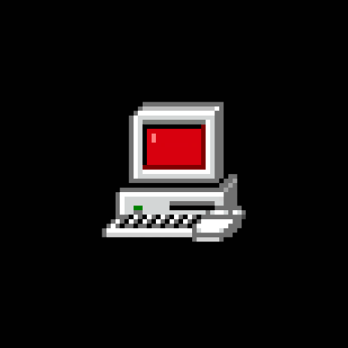

[ / - /about - /blog - /webrings - /source - /cool-stuff - /changelog ]
Hey.
That's me, btw, I'm a pixel art computer with a red screen, truth.
I'm a software developer and IT support. I really love computer science, operating systems, open-source and all that's related to computers and low-level code.
I'm from Brazil, state of São Paulo, so of course my native language isn't English, but Portuguese. That's why my English sounds like a Latino trying to speak English, which is my exactly situation. But, improving every day.
I enjoy MLP - and yes, you can call me a Brony for that. The show is for kids and little girls, without a doubt. I liked it because I think the writing is funny and well-made, the history is interesting - yeah, this pony show has extensive lore that can be compared with Adventure Time, Owl House and even FNAF, haha! I talk more about it on my blog, some day.
I work on a ThinkPad E470 with CachyOS XFCE. I'm using it mainly because it's good for games, but I'm going to try Gentoo soon. I made this website using HTML, CSS and JS, with Neovim and Vim (yes, two editors). The project is hosted on Neocities (what a big surprise, huh?). The source code is available on GitHub and /source. It will be on SourceForge soon.
This page was created to be lightweight, fast and useful. I strongly believe in the KISS philosophy of projects like Linux, Git, C, Lua and more. So don't expect 'cool' lights, sounds and effects. At most, expect a simple script or a basic CSS style, but not more than this. You can find the source code on GitHub, so you can make sure that I'm not hacking you or something.
It's so light and simple that you can access it from your terminal emulator or TTY, using a TUI browser like Chawan, and of course, smartphones - this site has the responsible certificate, all screen sizes will work wonderfully.